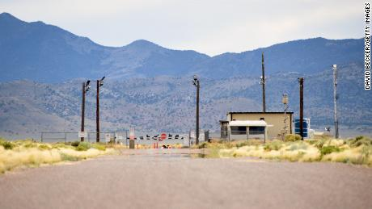

Triangulo de las bermudas
Asesinato de John Kennedy
ovnis
area 51

Triangulo de las bermudas |
Asesinato de John Kennedy |
ovnis |
area 51 |
|
 |
Charles Berlitz
su famoso libro el triangulo de las bermudass.
Este libro contribuyó en gran medida a popularizar la idea de que el Triángulo de las Bermudas es un área del Océano Atlántico particularmente propensa a hacer desaparecer buques y aviones. Con el paso de los años el libro logró vender unos 20 millones de ejemplares, varios de los cuales correspondían a las ediciones traducidas a unos 30 idiomas. Su libro es El Triángulo de las Bermudas

Philip Shenon
Es un libro con el cual viajas en el tiempo pasado.
En el cincuenta aniversario de la muerte del presidente Kennedy, el periodista del New York Times Philip Shenon reabre uno de los grandes magnicidios de la historia para llegar a una conclusión: el asesinato pudo evitarse y la investigación del mismo estuvo torpedeada desde el principio. A lo largo de 752 páginas, Shenon revela con maestría los secretos y mentiras del caso gracias a los testimonios de supervivientes vinculados a la investigación que se atrevieron a hablar después de mucho tiempo. Con su autentico libro JFK. Caso Abierto
Leslie Kean
Para realizar este libro, Leslie Kean ha pasado diez años leyendo información confidencial desclasificada, y ha entrevistados a pilotos, generales y funcionarios gubernamentales con participación en distintos niveles en relación al fenómeno OVNI, y ha llegado a la conclusión de que hay pruebas de que existen objetos y episodios inexplicables que no han podido ser investigados debidamente y que requieren de un trabajo científico sin ideas preconcebidas ni prejuicios. Su libro ovnis
Annie Jacobsen
La historia jamás contada de la base militar más secreta de América.
l Área 51 es una instalación militar no reconocida por el gobierno estadounidense. Numerosas personas afirman haber visitado esta zona, pero hasta la fecha, no ha habido testimonios creíbles que hayan dado cuenta del tipo de actividad llevada a cabo en estas instalaciones. La periodista Annie Jacobsen ha tenido acceso a información clasificada y a testimonios que trabajaron en el Área 51. Con su libro Area 51